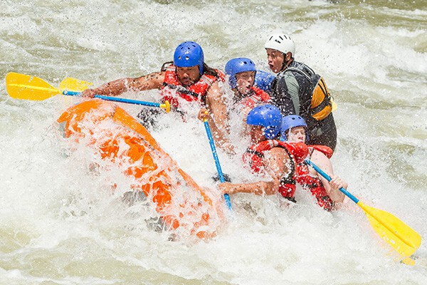
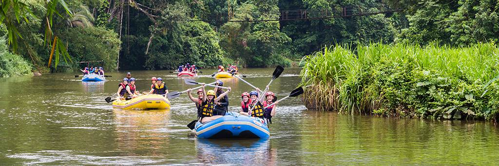
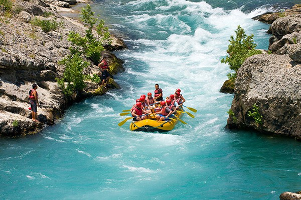
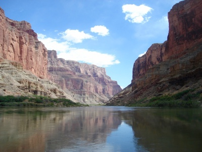
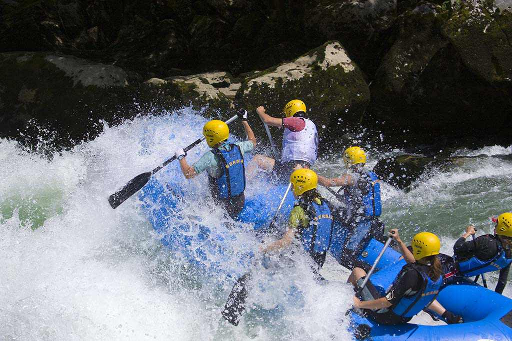
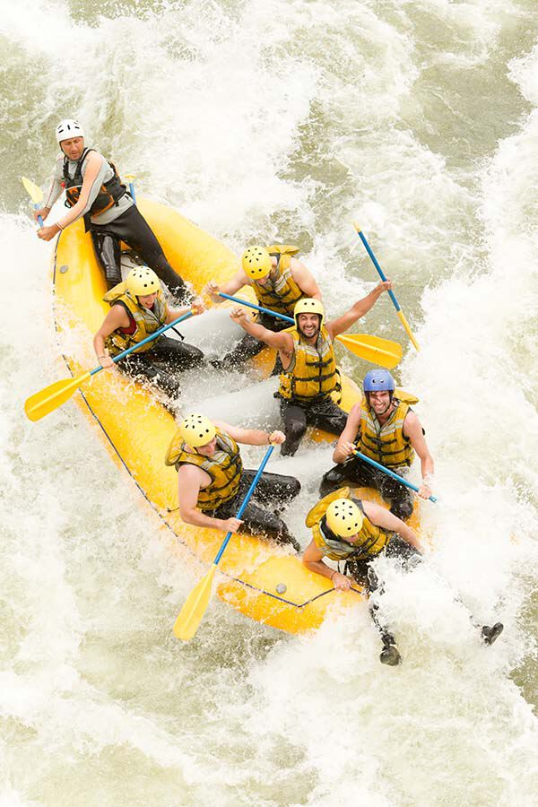
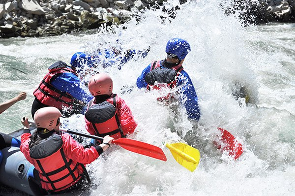

company purpose, mission, creed, motto, etc. It is Ok to use non-sense, placeholder language for now.


company purpose, mission, creed, motto, etc. It is Ok to use non-sense, placeholder language for now.
Brief history of the company. The first rubber raft was made by Lt. John Fremont and Horace H. Day believed to be built it the 1840s. They planned to survey the Rocky Mountains and Great Plains. Although invented back then, it wasnʼt until the turn of the century that the first commercial rafting trip took place. On June 9, 1940, Clyde Smith lead a successful trip through the Snake River Canyon. In later years, John D. Rockefeller, Jr. constructed a modern resort hotel in Grand Teton National Park. In the late 1950s the lodge began offering float trips. They used surplus war rafts that were 8 ft wide by 27 ft long. Less than 500 people went that year but the demand started increasing. It wasnʼt until the 1960s and 70s that whitewater rafting companies started forming. In the 1972 Olympic games in Munich, whitewater rafting was included for the first time. Now whitewater rafting has risen to a popular sport and hobby, growing more and more every year.




